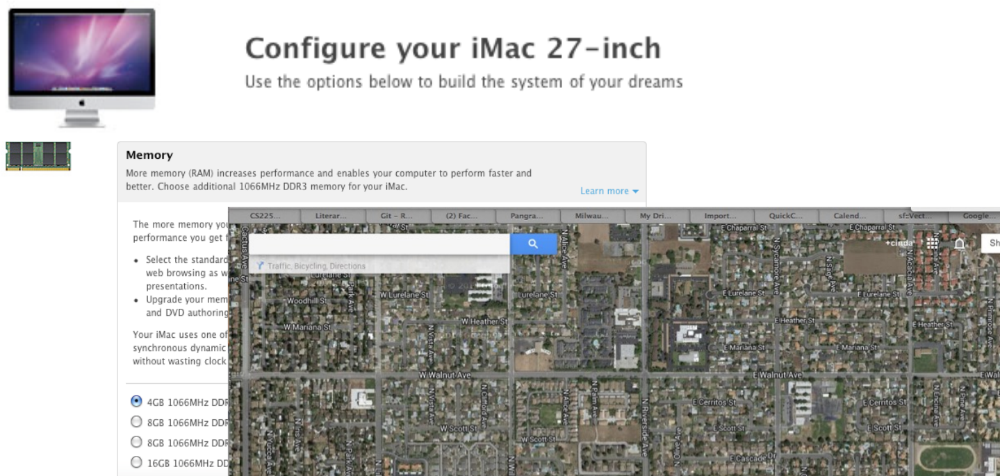

Linked Memory
Announcements
Lesson 3.2 (video)
insertAtFrontprintReverseMake at least 3 observations about this code:

Backtrack to variables:
Special variable type:
| loc | name | val | type |
|---|---|---|---|
What type is q? ______________
cout << x; What is output? ______________
cout << p; What is output? ______________
Write a statement whose output is the value of x, using variable p: ______________
cout << *p; What is output? __________
p = nullptr; Do you like this? __________
q = nullptr; Do you like this? __________
Memory leak:
Deleting a null pointer:
Dereferencing a null pointer:
| 1 | pointers1.cpp |
one int, two names |
| 2 | pointers2.cpp |
new, delete, and aliasing |
| 3 | pointers3.cpp |
a leak, and two ways to meet nullptr |
CPSC 221